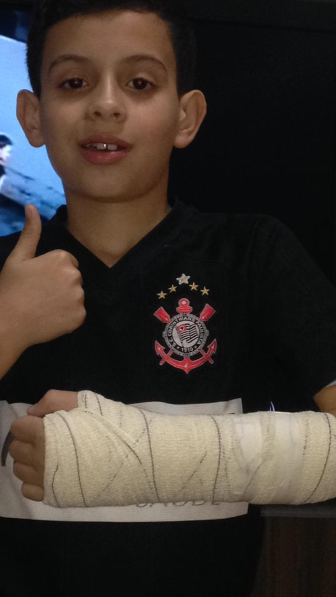
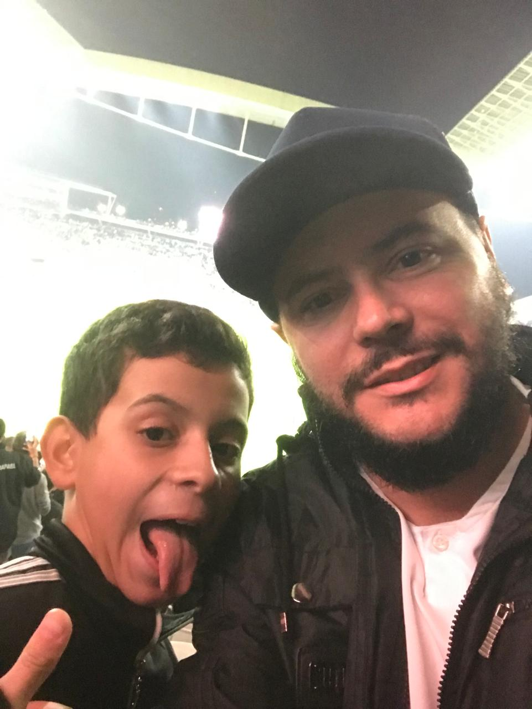
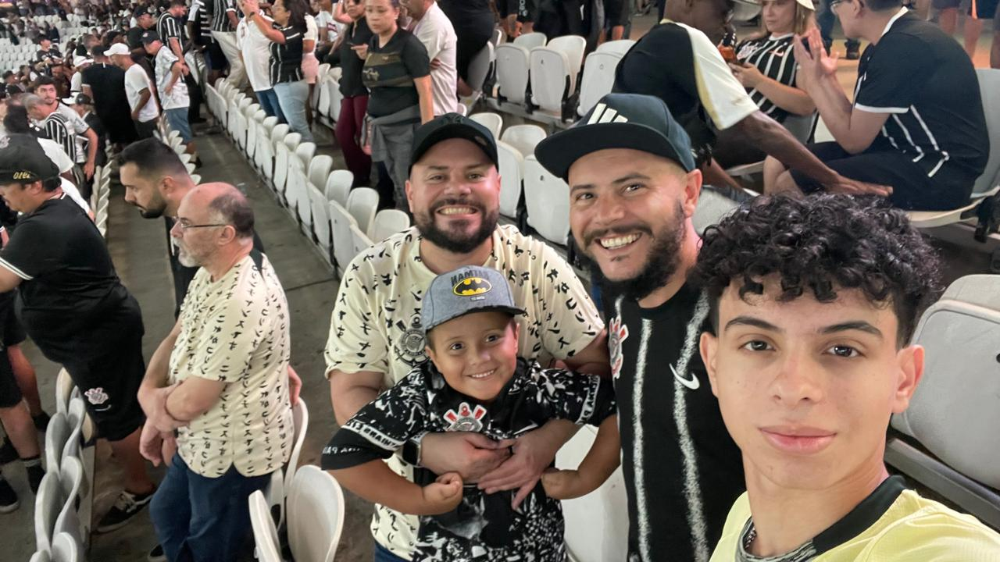
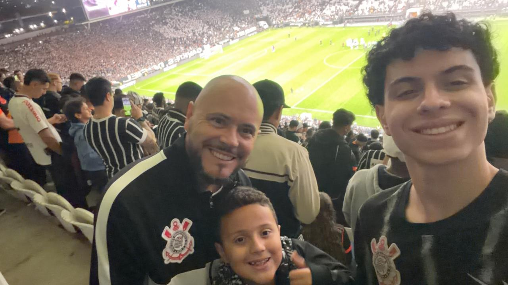

Minha História
Onde tudo começou
Nasci em uma casa dividida: meu pai é corinthiano, minha mãe é são-paulina e minha avó é palmeirense. Por influência de familiares e por gostar da cor verde, cheguei a querer ser palmeirense, uma péssima decisão. Quando fui contar isso ao meu pai, ele me olhou e, do jeito mais carinhoso possível, disse: “Se você virar palmeirense, eu não sou mais seu pai”. Chorei muito, mas hoje agradeço por ele ter me colocado no caminho certo.

A infância no escritório da minha avó
Quando eu era criança, morava com a minha avó, porque meus pais não eram casados e viviam trabalhando e fazendo faculdade. Na casa dela havia um escritório onde eu brincava com meus brinquedos. Nos dias de jogo do Corinthians em que meu pai ia lá, ele comprava Doritos e nós levávamos uma TV para esse escritório, o único cômodo onde a antena pegava.
Aquele momento era muito mais do que assistir a uma partida. Meu pai trabalhava e estudava na época, e era difícil vê-lo, então esse era um dos poucos momentos em que ele conseguia ficar comigo. Foi ali que percebi que o Corinthians não é só um clube.
Um sentimento de pertencimento
O Corinthians é um grupo, uma sociedade que faz você sentir que pertence a algo. Ele junta famílias e amigos em torno de um único objetivo e dá a todos a sensação de fazer parte de uma causa. Estudos indicam que sentir-se parte de um grupo é uma necessidade humana básica e está ligado a mais bem-estar (Baumeister e Leary, 1995; Wann, 2006). Esse sentimento que o Corinthians sempre me deu torna minha vida muito mais feliz.
O nome desse sentimento é “Bando de Loucos”. E o fato de não abandonarmos o clube por nada nos rendeu o apelido de “Fiel”.

Torcer mesmo nos dias difíceis
Eu não torço porque o clube é grande ou vitorioso. Hoje o Corinthians vive uma crise financeira enorme e, apesar dos títulos, na maior parte do tempo torcer por ele traz preocupação. Todo dia o torcedor encontra um novo desafio: dívidas, problemas dentro de campo e com jogadores, dirigentes que parecem não saber o que estão fazendo e técnicos que são ídolos, mas não querem vir para o clube por causa de todos esses problemas. Mesmo assim, no fim do dia, ninguém abre mão do Corinthians.
Vi o Corinthians ser campeão mundial, da Libertadores, da Copa do Brasil, do Brasileiro, do Paulista e da Supercopa do Brasil. Mas também vi o clube flertar com o rebaixamento tantas vezes que perdi a conta, vi dívidas pequenas virarem dívidas enormes e vejo a dívida de cerca de R$ 2,8 bilhões crescer cada vez mais. Vejo jogadores que não dão a mínima para o clube e dirigentes corruptos roubando o clube todo dia.

Hoje
No fim de tudo, o Corinthians é uma montanha-russa de emoções, e eu faço parte do Bando de Loucos que passa por ela todos os dias. Tudo isso começou graças ao meu pai, que, do jeito mais carinhoso possível, me fez corinthiano. Até hoje, em dia de jogo, sento no sofá com ele e com meu irmão mais novo para comer Doritos e assistir ao Corinthians. Sou eternamente grato por fazer parte do Bando de Loucos e por ser um torcedor fiel. Obrigado, pai.
